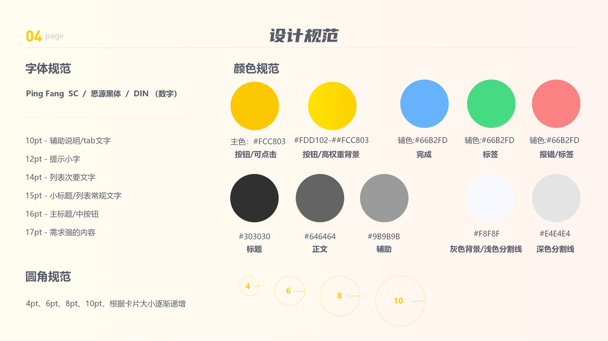
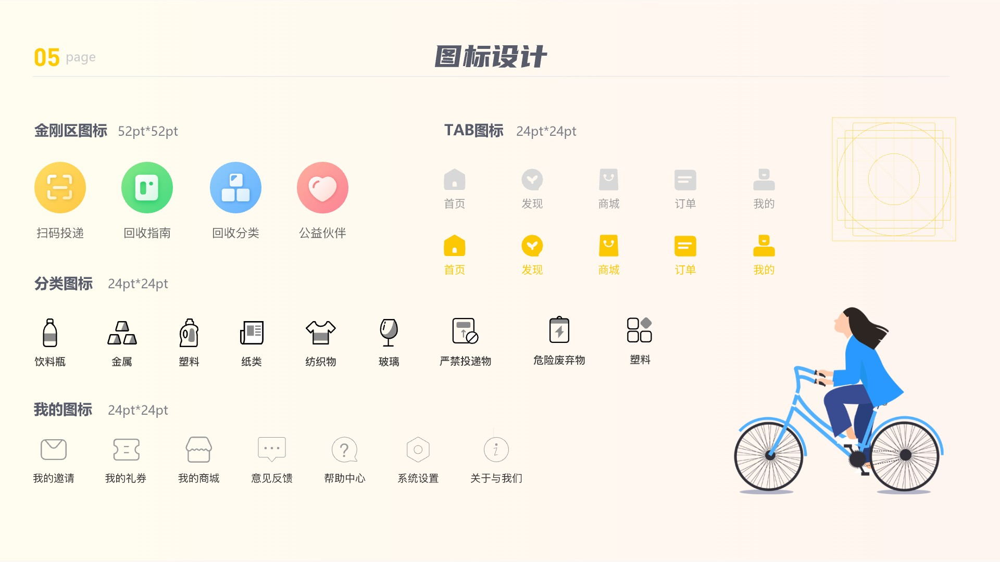
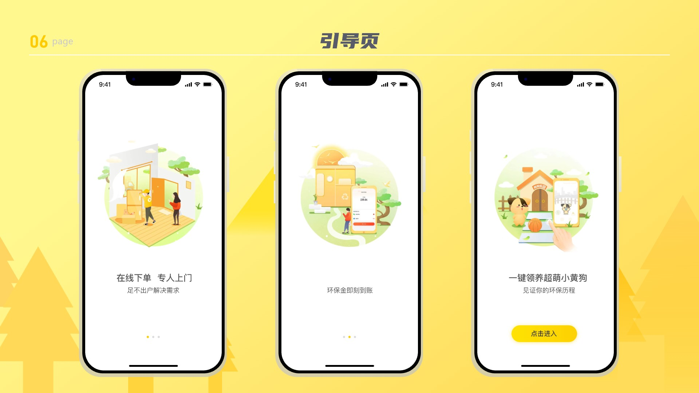
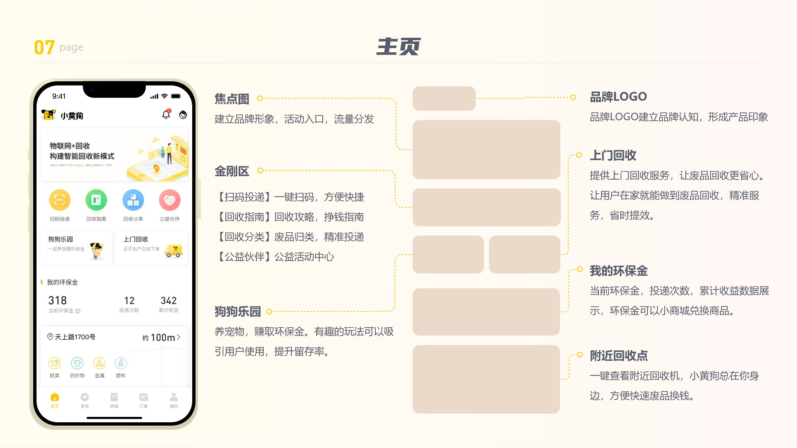
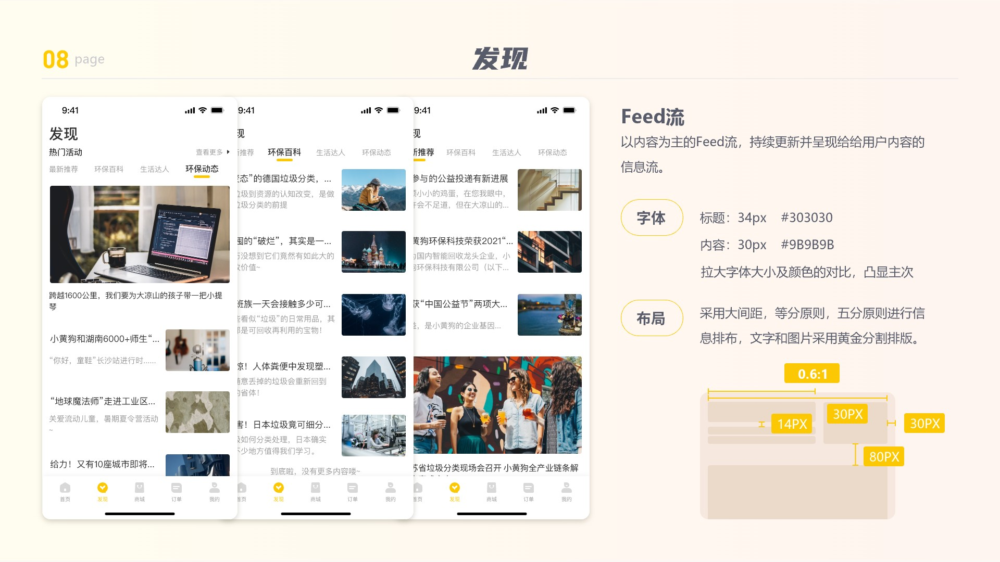
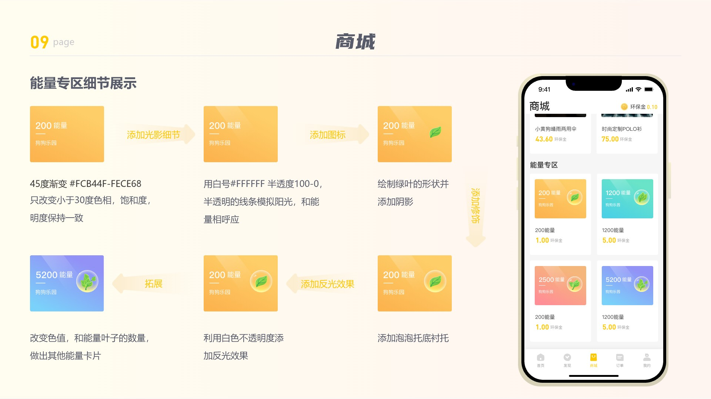
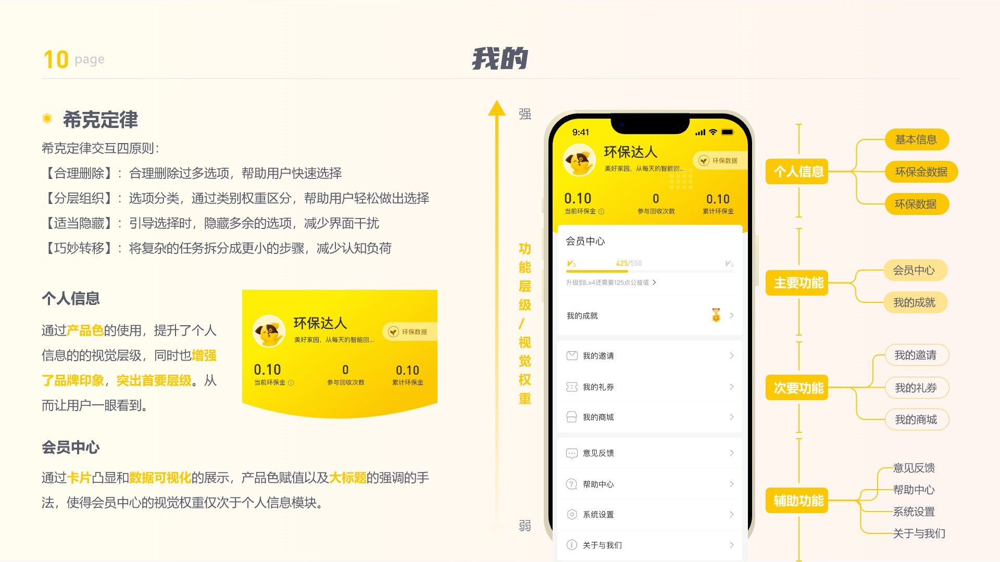
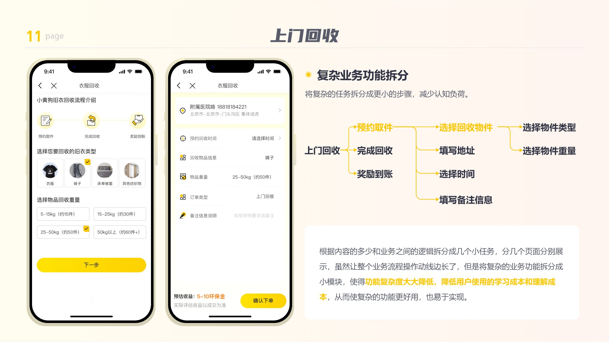
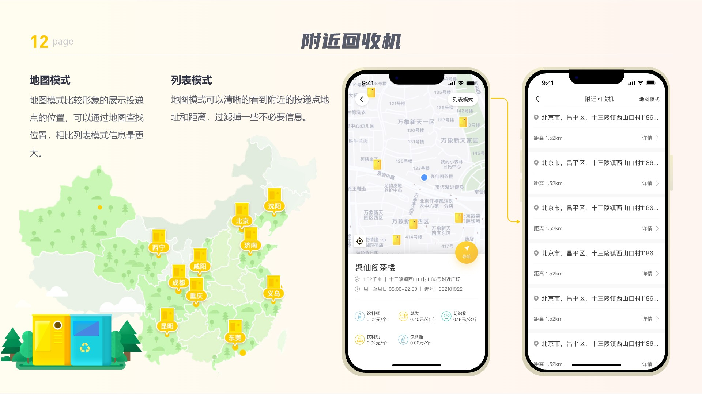
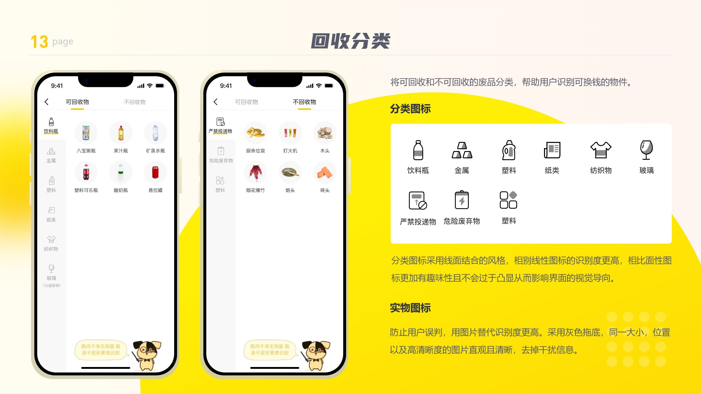

C端 · APP · 2019
小黄狗APP
设计职责
参与小黄狗APP的用户需求分析、原型图设计及界面设计工作。 参与APP的界面设计与视觉规范制定。负责产品交互、图标、按钮、Banner、活动长图，以及界面排版、启动页与引导页的更新设计。
完成了小黄狗APP的界面设计，通过统一的视觉语言与友好的交互体验，提升了产品的用户留存与品牌辨识度。
设计背景
截至2019年，国内再生资源回收企业超5000家，回收加工厂3000多家，从业人员140余万人，站点16万个，年回收总值450亿元。回收市场进入平稳发展阶段，但呈点状式、分散分布，回收网络单一、效率低。大量资源未被有效回收，尤其与生活密切相关的纸品、塑料、玻璃制品流失严重，原因之一是当前回收流程过于繁琐。
需求分析
- 需求人群：想拿废品挣钱的企业和个人。
- 用户痛点：传统废品回收存在的问题回收效率低、等待时间长、价格不透明、不能随时随地。
- 解决方案：物联网感知＋大数据分析＋金融结算”的手段构建精准回收服务平台，连接回收企业和用户。 回收企业：提高回收速度，线上平台转化，流水增加。 用户：节省时间，快速解决需求，不带来后顾之忧。可以得到利益。
设计思路
首页设计需兼顾流量分发与品牌认知，通过合理划分功能与信息层级来区分页面主次，并平衡好视觉权重。同时，将复杂业务拆解为多个简单连续的小步骤，以降低功能复杂度，减少用户的学习与使用成本。在信息展示上，采用列表模式与可视化地图模式相结合的方式，兼顾关键信息与位置关系的清晰呈现。
核心设计展示











